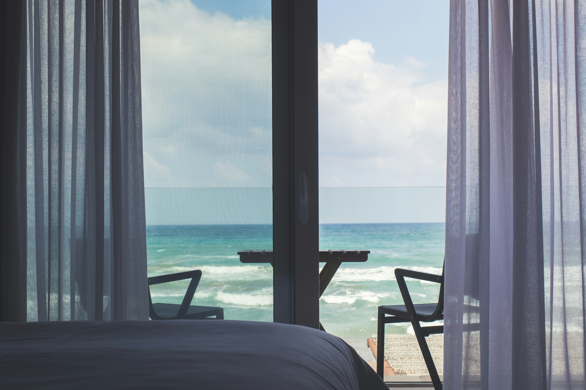
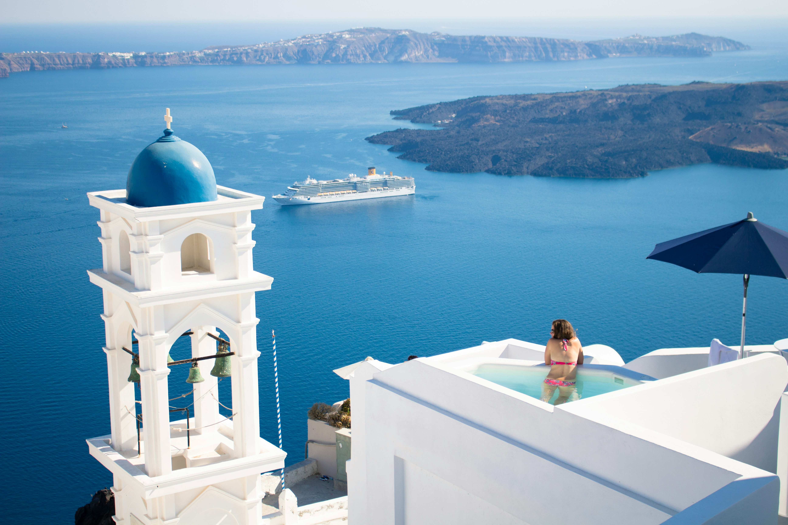

Anasayfa
Taş Konak Otel
Taş Konak Butik Otel, Ege'nin tarihi dokusunu modern konfor ile
birleştiren özel bir konaklama deneyimi sunuyor. Tarihi bir taş yapı
içinde yer alan otelimiz, otantik Ege köylerinin sıcaklığını ve
samimiyetini yansıtmaktadır. Her biri özenle dekore edilmiş odalarımızda,
geçmişin izlerini hissederken, modern olanaklardan faydalanabilirsiniz.
Geniş bahçemizde huzur bulabilir, yöresel kahvaltımız ile güne enerjik
başlayabilirsiniz. Taş Konak Butik Otel, misafirlerine hem tarihin hem de
doğanın kucağında unutulmaz bir tatil vaat ediyor.



Müşteri Yorumları
-
Yorum 1
"Taş Konak Butik Otel, otantik Ege ruhunu en güzel şekilde yansıtıyor.
Tarihi taş odalarda konaklamak çok keyifliydi. Her detay özenle
düşünülmüş, odalar temiz ve rahattı. Bahçede yapılan kahvaltı da
günümüzü mükemmel başlattı. Kesinlikle tekrar geleceğiz!"
-
Yorum 2
"Bu kadar huzurlu bir ortam bulmak zordur. Eşimle birlikte hafta sonu
kaçamağı yaptık ve Taş Konak'tan ayrılmak istemedik. Eski taş yapının
mistik havası ve modern dokunuşlar harika bir uyum yakalamış. Personel
de çok ilgiliydi, kesinlikle tavsiye ederim."
-
Yorum 3
"Otelin tarihi dokusu gerçekten etkileyici. Otantik bir ortamda,
konforlu bir tatil geçirdik. Yöresel lezzetlerin sunulduğu kahvaltı ise
ayrı bir güzeldi. Hem dinlenmek hem de biraz tarih koklamak isteyenler
için mükemmel bir tercih."